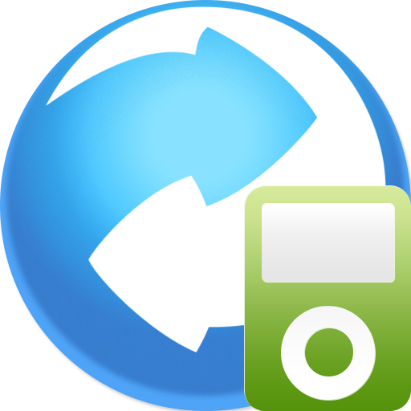

Multi-Use App

Camera
December 2016
This App contains a brillant Camera function. To use the camera function click into the "camera" tab located on the bottom of the screen. You will be able to take a photo, view a photo and open your Gallery to see previously taken photos.
Check Your Location
December 2016

With this function you are able to view your current location. The application uses your GPS in order to recieve your location. You will be able to gather the following data ; Latitude, Longitude, Altitude, Accuracy, Altitude Accuracy, Heading, Speed and Timestamp.
Handy Converter
December 2016

This function allows you to use some of the most commonly used converters. to launch the converter simply click on the converter tab.